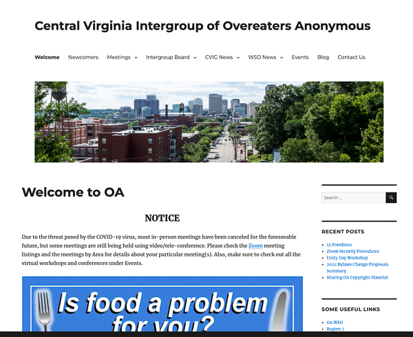

Mark Elliott

Webmaster
Mark Elliott has over 21 years of experience with multiple information technologies in the capacity of a support technician, webmaster, business analyst, engineer and project manager working with clients at all levels of the organization to ascertain client needs and create appropriate technical solutions. However, as can be seen from the work history, it has been a long time since Mark worked for someone else. He had to leave his last position as an engineer due to a serious illness. As that situation was resolving, his mother was diagnosed with Alzheimer’s disease, and he became her primary caregiver. During that time, he earned a living as time allowed from the traditional crafts and product photography work shown on his personal website. After his mother passed, he continued those endeavors wanting to try and make a go of them, but the pandemic made it clear that those were just not going to be a viable way to make a living going forward. Consequently, Mark decided to turn his long standing interest in web design into his new career.
Mark had always wanted to go in more of a development direction, particularly with regard to web design. He enjoyed the creativity and the ability to make a visible product. Until his most recent break in employment, it was just easier to keep going along the operations career track. However, Mark has been creating web sites since there was a web in 1995; he created AmericanLongrifles.org in 2003 (although it was turned over to volunteer moderators many years ago); and for the past 12 years or so, has been supporting his various business operations by creating and maintaining a web presence. In fact, most of his sales were driven by those websites. For his working search terms, his site was ranking on the first page if not the top of the page in a Google search. Unfortunately, the crafts he persued represented such a small market segment, there just wasn’t much money to be made. He had known that for some time, but he pursued the dream until the pandemic put the final nail in the coffin.
So, at the end of 2021 Mark decided to close his business and sign up for a coding boot camp at the University of Richmond starting on February 17, 2022. In the mean time, he has been doing self-study along a WordPress developer track in LinkedIn Learning. Given his degree in Information Systems, his decades of IT experience, as well as his practical web development experience, He doesn’t feel that it is that big of a lift to change career tracks. He brings a lot of experience in the IT project life cycle that a less experienced developer would not have. Mark knows how to work with people at all levels of the organization, determine the pertinent deliverables, and focus on the job at hand. He understands business priorities, change management, and has a track record of getting the job done. He has a good bit of experience breaking down complex projects and problems into manageable tasks and resolving them one at a time. He would be an asset to any organization.
Featured Projects
More information at Mark Elliott
Mark Elliott's Personal Website

Personal website representing Mark Elliott's long standing interest in traditional arts and crafts.
View projectWebsite for the Central Virginia Intergroup of Overeaters Anonymous
Web site of the support body of the Overeaters Anonymous meetings in the central Virginia area. This site was created and is maintained on a volunteer basis.
View projectWork Experience
Optional paragraph for work experience summary. Not a part of the job details. Delete if not being used.
Webmaster
Central Virginia Intergroup of Overeaters Anonymous
2019-Present
Created and maintain website for the Intergroup as well as consult on technical matters.
Webmaster
Self-employed
2010-Present
Created and maintained multiple websites in support of various business endeavors including photography and traditional arts and crafts.
Caregiver
2008-2014
Left last job due to illness and transitioned to caregiver for my mother with Alzheimer’s.
Engineer
Peak10
2006-2008
Engineer in a regional data center responsible for the installation and support of server hardware and software for many different types and sizes or clients.
Optional list:
- Delete this list if you don't need it.
- Created...
- Lead...
- Responsible for...
Webmaster
Self-employed
2019-Present
Created and maintained a website for builders of traditinal muzzleloading firearms; AmericanLongrifles.org
Intel Server Support Engineer
Anthem
2000-2003
Installed and supported Intel server systems in Anthem's national data center.
Optional list:
- Delete this list if you don't need it.
- Created...
- Lead...
- Responsible for...
Education
University of Richmond, Richmond,Virginia
Coding Boot Camp (currently enrolled)
Full Stack Web Development
Virginia Commonwealth University, Richmond,Virginia
B.S. Information Systems
Studies in business with an emphasis on information systems.